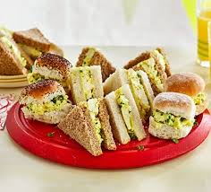

A fresh and healthy plant-based option
2 slices of whole grain bread (toasted if you like)
1/2 avocado (sliced or mashed)
1 – 2 leaves of lettuce or spinach
2 slices of tomato
1/4 cup grated carrots or cucumber slices
2 slices of roasted bell pepper or grilled zucchini
1 tbsp hummus or vegan mayo
Salt & pepper to taste
Spread hummus (or vegan mayo) on both slices of bread.
Layer lettuce or spinach, avocado, tomato, and carrots.
Add roasted bell pepper or zucchini slices for flavor.
Season with a pinch of salt & pepper.
Close with the second slice of bread, cut in half, and enjoy!